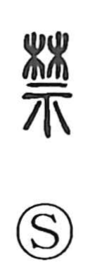

禁

Uncategorized
Kun: | On: kin
to prohibit ・ ban ・ forbid ・ interdict ・ taboo
Explanation
禁 is built from 林, a flourishing stand of trees regarded as a sacred grove where the gods dwell, set above 示, the altar table used in rites of worship. Together they depict the consecrated precinct in a grove where an altar stood and divinity was venerated. Because this was the gods’ own domain, hunting and ordinary entry were off-limits, and from that inviolability the character came to mean prohibition and restraint. By extension, spaces set apart as sacrosanct in human society—such as imperial precincts—were likewise called 禁, as seen in compounds like 禁衛 (guards of the palace), 禁中 (the Imperial court), and 禁門 (the palace gate).